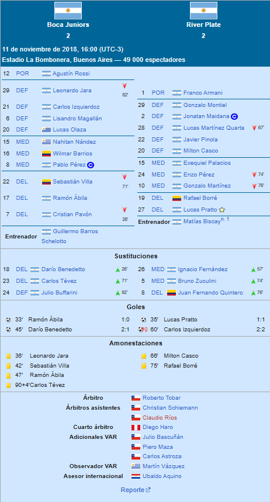
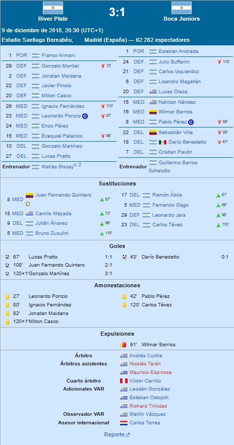

⬅ Inicio
COPA LIBERTADORES
Torneo
La Copa Libertadores 2018, denominada oficialmente Copa Conmebol Libertadores 2018, fue la quincuagésima novena edición del torneo de clubes más importante de América del Sur, organizado por la Confederación Sudamericana de Fútbol, en la que participaron equipos de diez países sudamericanos: Argentina, Bolivia, Brasil, Chile, Colombia, Ecuador, Paraguay, Perú, Uruguay y Venezuela. El torneo tuvo un receso entre la fase de grupos y los octavos de final, debido a la realización de la Copa Mundial de Fútbol de 2018 en Rusia. El sorteo de las fases preliminares y de grupos se realizó el 20 de diciembre de 2017 en la sede de la Conmebol, ubicada en Luque, Paraguay, mismo día en el que se sorteó también la primera fase de la Copa Sudamericana 2018.
Camino a la final
River Plate[9] se clasificó a la Copa Libertadores como subcampeón del Campeonato de Primera División 2016-17 y campeón de la Copa Argentina 2016-17, logrando su tercer título de la copa nacional. Esta clasificación marcó la 34.ª participación del club en la historia de la Copa Libertadores. El millonario inició su participación en la Copa Libertadores 2018 en el Grupo D, con un desempeño sólido que lo posicionó en el primer lugar de su grupo al final de la fase de grupos. En su primer partido, disputado el 28 de febrero en el estadio Nilton Santos de Río de Janeiro, empató 2-2 frente a Flamengo, en un encuentro en el que se destacó la capacidad de reacción del equipo. A continuación, el 5 de abril, River Plate recibió a Santa Fe en el Monumental de Buenos Aires, pero no pudo concretar su superioridad y el partido terminó en un empate sin goles (0-0).
Final
Esta edición será recordada por la histórica final disputada entre los clubes argentinos Boca Juniors y River Plate, una de las rivalidades más grandes del mundo, y por la decisión de la Conmebol de trasladar la vuelta de la final por única vez en la historia del certamen, a tierras europeas, tras los incidentes ocurridos previo al inicio del partido de vuelta, en las inmediaciones del Estadio Monumental. El campeón fue River Plate, al derrotar por un global de 5-3 al conjunto xeneize. Por la obtención de la copa, clasificó a la Copa Mundial de Clubes de la FIFA 2018, y disputó la Recopa Sudamericana 2019 ante Athletico Paranaense de Brasil. Asimismo, accedió de manera directa a la fase de grupos de la Copa Libertadores 2019.
Partidos
IDA

VUELTA
